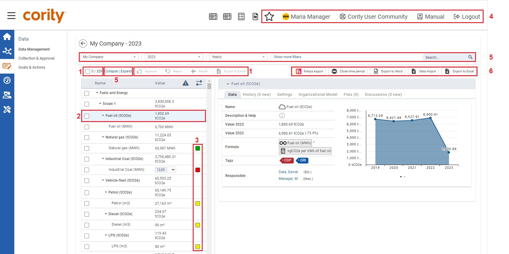
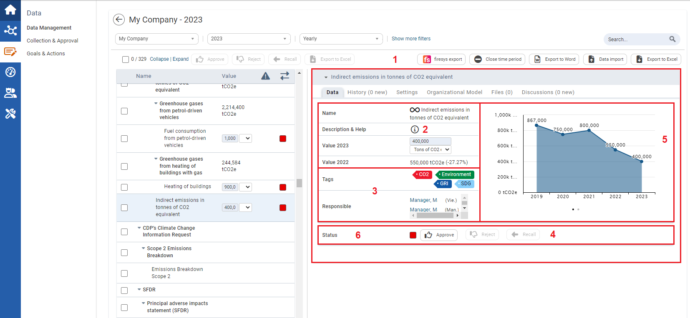

In the Data Management area, data can be entered and managed for previously defined KPIs and standards. The structure of the module is identical to the Standards & KPIs module. In the left column, all KPIs are displayed, and the right column shows the detailed view of a selected KPI.

| 1 | Select the checkboxes in combination with the action symbols ( ), you can change the status of several KPIs at once and export the selected KPIs to Excel*. |
| 2 | Here you can see the KPI name, the identifier and the type. In addition, there is a value field behind the name (for many KPI types you can directly enter the data here). Clicking on the row opens the detailed information of the KPI on the right side. |
| 3 | Here you can see the current approval status of the KPI. The individual steps and colors are defined by the company. |
| 4 | This area allows you to access your bookmarks, your user account, or the user Manual, contact Support, or logout, at any time. |
| 5 | You can use the Search function to browse through the displayed entries by typing any term into the search field. You can use the drop-down menu to filter per specific criteria, e.g. organizational unit, time period and month. You can also Collapse and Expand all entries. You can get more filter options by clicking Show more filters. |
| 6 | Click to export the values of the selected organizational unit and period to Word. Click |

| 1 | These tabs can differ from user to user. On the Organizational model tab the values of the indicator will be displayed for all your assigned organizational units. The Files tab allows you to attach files to the selected KPI and the number of files is displayed in brackets. Click Settings to view the detailed KPI settings. On the History tab all changes to the selected KPI are documented. |
| 2 | In this area you can see the name and description of the indicator and can enter the value. The input option depends on the indicator type, e.g. for text indicators you will see a text field at this point. Below this you will find information about the previous year's value. Depending on the system settings, other fields can be displayed, such as the data quality and note field. |
| 3 | The related "Responsible" person(s) and Tags are displayed here. |
| 4 | Here you can change the Status of the KPI, i.e. whether it is approved, rejected or recalled. You can change the status at any time. |
| 5 | For quantitative KPIs a chart will be displayed that indicates the values of the last years. You can change the displayed charts by clicking on the arrows, which appear via mouse-over on the chart. |
6
| Various employees in different departments can be involved in data collection. Individual employees are not always shown all KPIs, but rather only the ones that are relevant for them. * The visibility of these fields depends on your settings. |